个人简介
做这个网站的原因：
热爱前端开发，喜欢使用原生三件套实现效果，将自己所学通过网页展示出来。 本网站是我的尝试之作，会持续的更新下去，希望有一天能够部署。
计算机本科生（25年），马上大三了，想做个自己的网页，就做了。
平面设计美术
Ps、Pr和Ae
最开始是想要做鬼畜，就学习了Pr，后来又想做MMD，就又学了Ps。 学了这些技能为我以后的种种尝试算是打下了基础吧
MMD
我最喜欢用的就是P渲染！（因为我不会用Ray渲）
自己做的也不太好，主要做星铁，最近一段时间学业有些忙碌，没有时间继续打磨。如果有兴趣可以访问我的主页 虽然看的人不多，但是很开心去看到有人和我一样热爱，去催更，甚至能找到同好。 [我的主页] 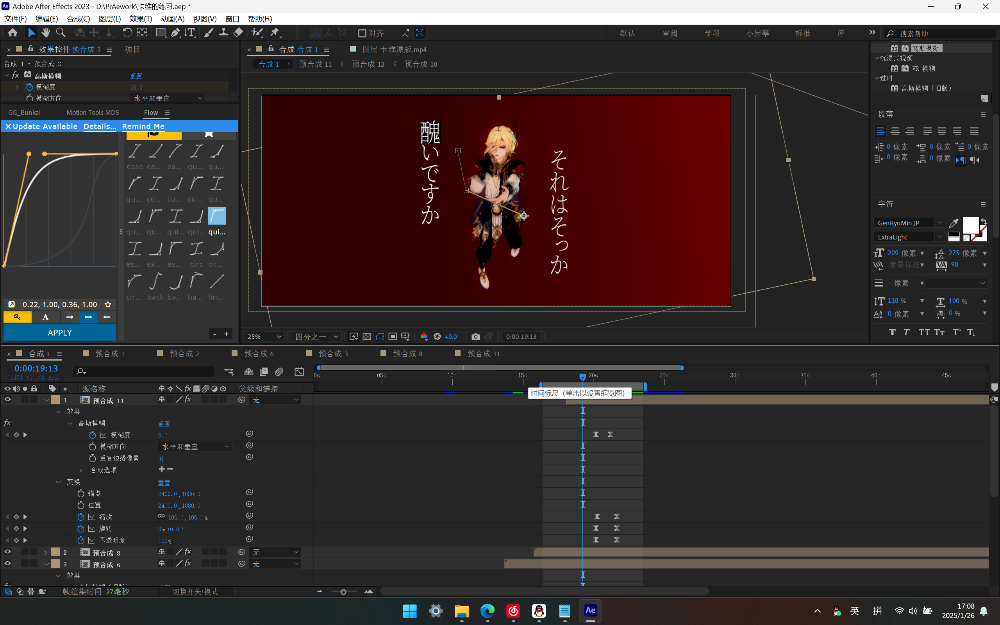
这是我制作起来最费时费力的视频之一，文字动画害我的电脑崩溃了好几次，重做了好几次。 [我的作品] 但是看到自己辛苦做的视频能被大家认可，也是狠狠感动了。 评论区的发癫也很有精神！
我最喜欢的老师是CicloO，这里是Ta的主页 [CicloO老师的主页] 我们都叫老师C美神，因为老师做的真的是仙品。老师的风格我非常喜欢，所以我一直在模仿老师的渲染， 我看了老师的很多 教程，但是我还是无法还原那种感觉。老师您真是太伟大了！
游戏
C#、Unity和Aseprite
我学的第一门编程语言不是Python，不是C，也不是C++，而是C#，因为Unity主要用它来编写脚本。 虽然我现在都忘得差不多了，Unity也是，几乎都忘记了。我就只做出了一个像样的游戏，准确来说是复刻。 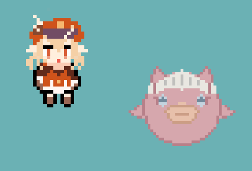 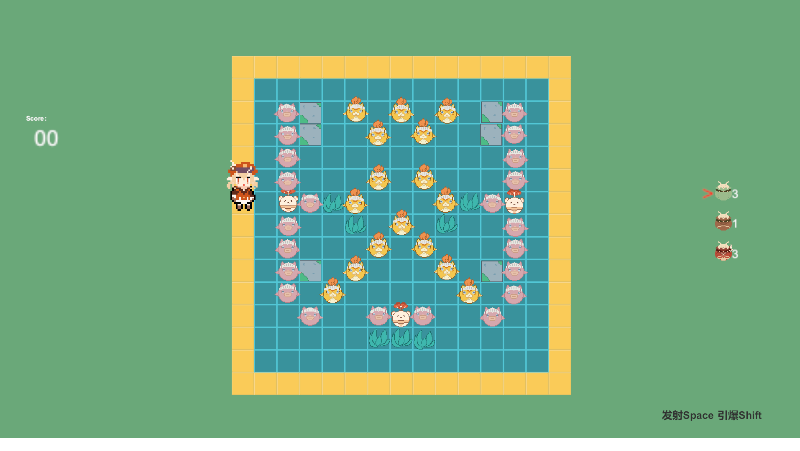
我复刻的是原神的一个小活动，主要就是发射蹦蹦炸弹炸鱼。所有的美术资源都是我一个人用Aseprite画的，我从未有如此的感觉-- 游戏团队的美术真是太重要了。一个人开发独立游戏的难度实在是太高了，自那以后我也就放弃了独立游戏的开发。
编程
C\C++、Python
学校上课主要是学C++，最开始只能写一些命令行程序，只有一个黑框，我不喜欢。 我也自己做过不少小游戏，使用QT框架或者EasyX图形库来开发，使用他们主要是因为他们主要用C++， 我个人是没有特别喜欢C++。
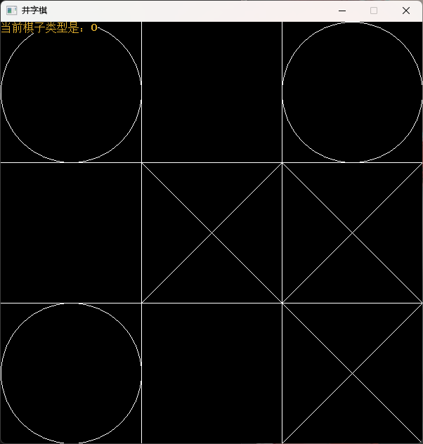 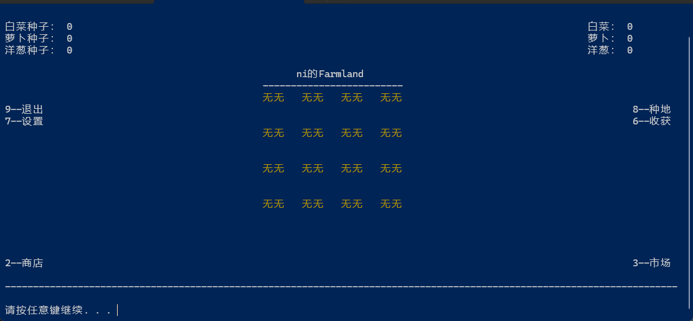 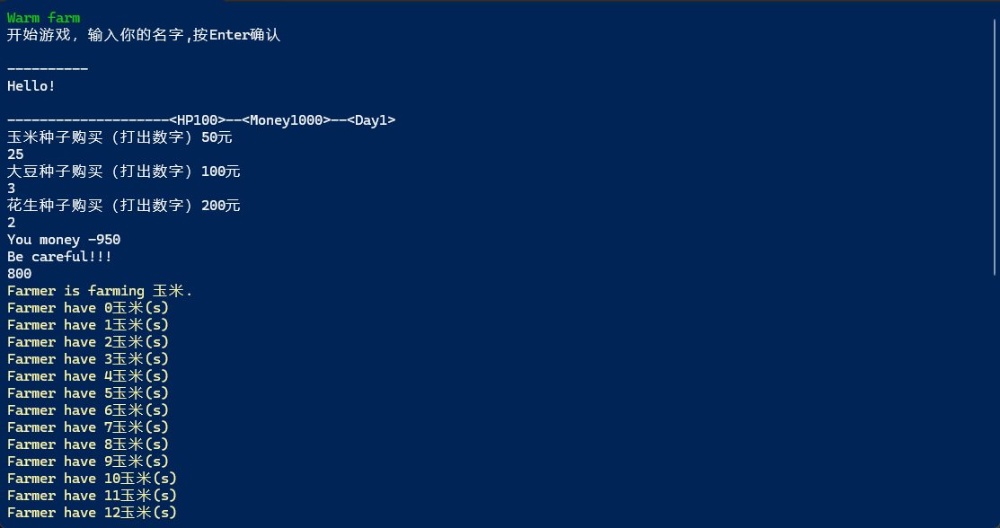 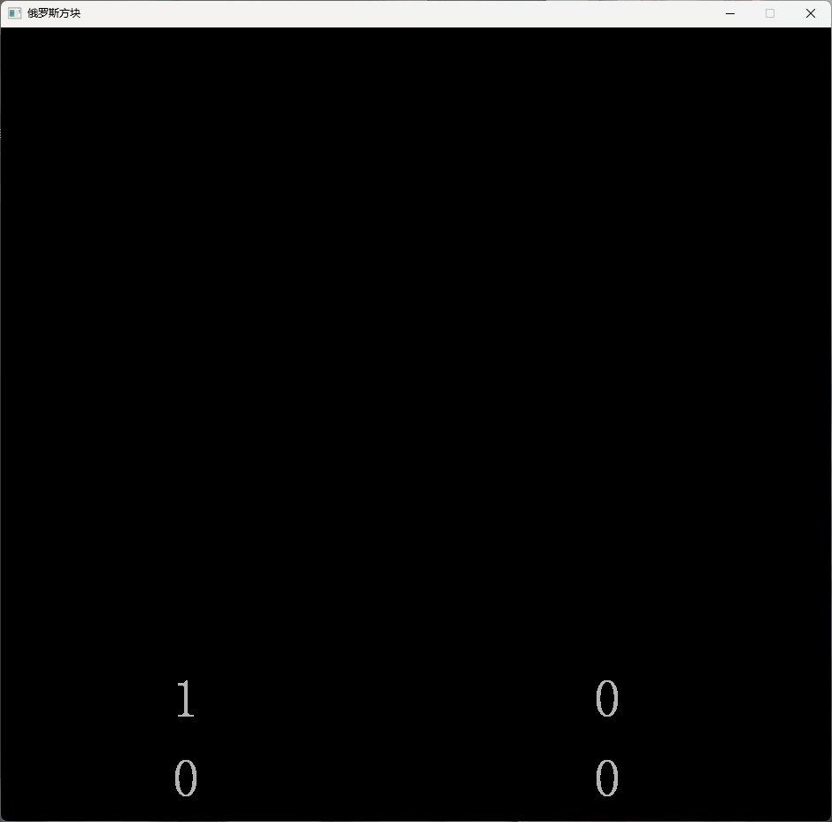 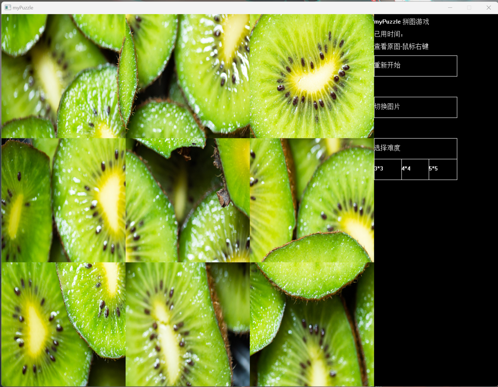我除了学业上需要的时候会使用C++，平时很少用它编程 我比较喜欢Python，最开始学是为了爬取网页内容，后来逐渐对Web自动化感兴趣，就又改了几个程序，自动刷课，自动约图书馆，自动连接校园网 接入人工智能自动回微信之类的。也是从那时接触了GitHUb，学习本地部署项目。
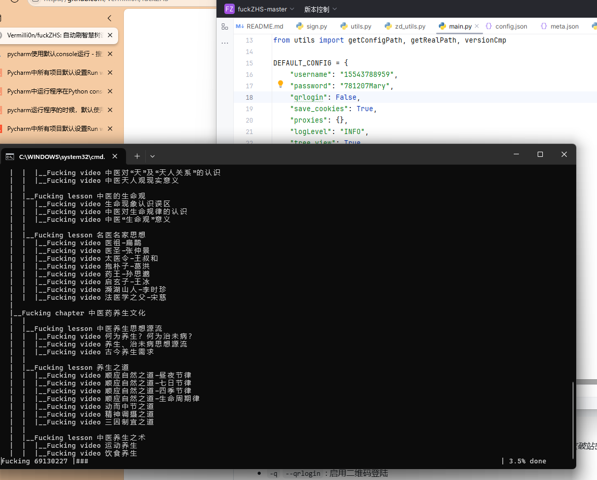 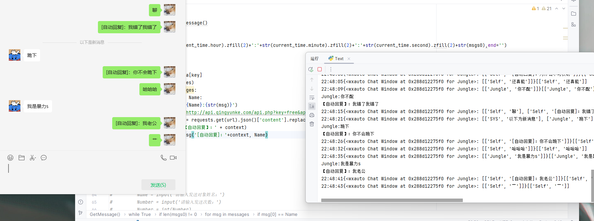 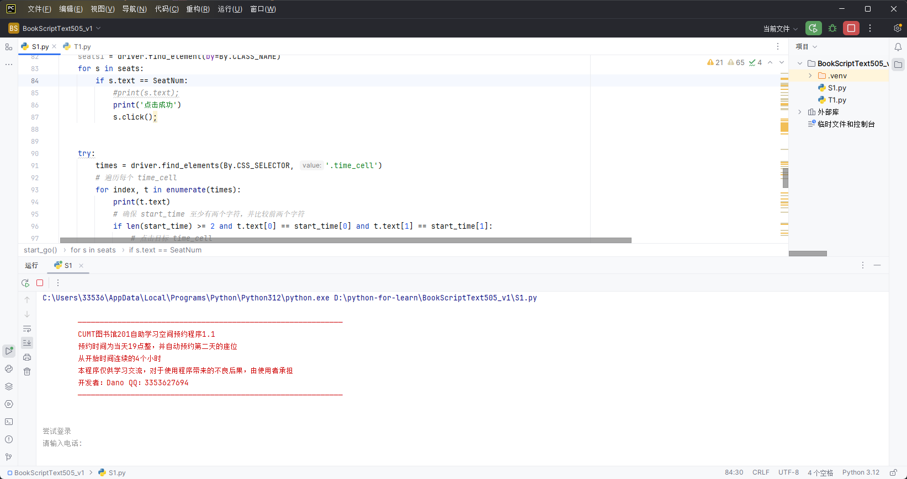这些主要是操作DOM元素，我对网页或者H5也越来越感兴趣，虽然之前简单的学过，但也只是皮毛。